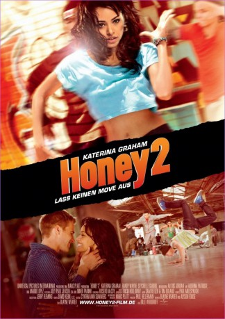
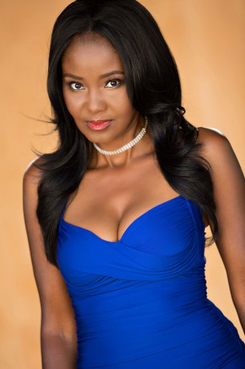
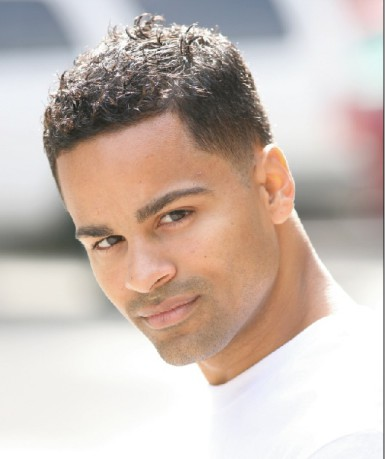

#7670 Honey 2 - Lass keinen Move aus
Alternativ: Honey 2
 
 IMDB-Wertung: 5.4 / 10
IMDB-Wertung: 5.4 / 10  Metascore: 0
Metascore: 0 
Die 17-jährige Maria wagt nach einer verbüßten Jugendstrafe in New Yorks Bronx einen Neuanfang. Genau in jenem Freizeitcenter, in dem sie unter der legendären Choreografin Honey Daniels ihre Begeisterung für den Streetdance entdeckte, trifft Maria auf eine engagierte Tanztruppe, die sich gerade für den TV- Contest "Battle Zone" vorbereitet. Doch bevor die begnadete Dancerin auf die Showbühne zurückkehren kann, muss sie sich erst einmal von dem übermächtigen Einfluss ihres Ex-Lovers und Dance-Partners Luis befreien.
Jahr: 2011
Dauer: 110 Minuten
FSK:
Land: USA Studio: UPHETonspuren: DTS - ,
Untertitel: Deutsch,
Auflösung: 1080p (1920x1080) Größe: 7403 MB
Genre: Drama, Musik, Komödie
Regisseur: Bille Woodruff
Drehbuch: Alyson Fouse
Soundtrack:
Darsteller:
- Gee Alexander als 718 Crew #1
 Gerry Bednob als Mr. Kapoor
Gerry Bednob als Mr. Kapoor- Kimberly Brooks als Maria's Case Manager
- Kelly Connolly als Girl In Club
- Seychelle Gabriel als Tina
- Laurieann Gibson als Celebrity Judge Rebecca
- Kat Graham als Maria Ramirez
- Alexis Jordan als Herself
 Mario Lopez als Celebrity Host
Mario Lopez als Celebrity Host- Michelle Maniscalco als 718 Crew #4
- Christopher Shazar als Luis
- Rosero McCoy als Jonas
 Lonette McKee als Connie
Lonette McKee als Connie Brandon Molale als Officer Gordon
Brandon Molale als Officer Gordon- Marisa Chen Moller als Juvie Guard
- Audrina Patridge als Hot Celebrity Judge
 Brittany Perry-Russell als Lyric
Brittany Perry-Russell als Lyric- Casper Smart als Ricky
- Melissa Molinaro als Carla
- Randy Wayne als Brandon
- Aviel Ayoung als 718 Crew #2
- Alexis Boyd als Juvie Crew
- Comfort Fedoke als Juvie Crew
- Victor Kim als Quest Crew
 Steve Terada als Quest Crew
Steve Terada als Quest Crew- Teresa Espinosa als Beat Freak
- Brandon Mitchell als Striker All-Star
- Duncan Tran als Freestyle Dancer
- PeiPei Alena Yuan als Freestyle Dancer
- Dmitry Chaplin als Tango Dancer
- Dawn Noel als Tango Dancer
- Lloyd Gordon als Mime
- Perris McCracken als Ballet Dancer
- Jessica Lauren Taylor als Ballet Dancer
- Riyaana Hartley als Specialty Dancer , uncredited
-  Fatimah Hassan als Mother #1 , uncredited
 Jossara Jinaro als Hip-Hop Dancer , uncredited
Jossara Jinaro als Hip-Hop Dancer , uncredited- Matthew Jordan als Dance Battle Fan , uncredited
- Greg Kuk als Club Dancer , uncredited
 Waymond Lee als Dance Battle Fan , uncredited
Waymond Lee als Dance Battle Fan , uncredited-  Ivan 'Flipz' Velez als Flipz , uncredited
- Aaron Benjamin als Production Assistant
- Ariana Berlin als 718 Crew #3
- Luke Broadlick als HD Crew #1
- Justin Deanda als HD Crew #2
- Brandon Gonzales als Officer Blaine
- Kallie Loudon als Julissa / Juvie Crew
- Juan Monez als 718 Crew #5
- Tyler Nelson als Darnell
- Wesley Quinn als 718 Crew #6
Datei: X:\3-Trilogie(G-M)\Honey\Honey 2 - Lass keinen Move aus (2011, FSK, 1920x1080).mkv seit 30.11.2017
Festplatte: HD Collection-2(A-Z)-3(A-M)
 Alle Filme aus Gruppe '3-Trilogie(G-M)\Honey'
Alle Filme aus Gruppe '3-Trilogie(G-M)\Honey'